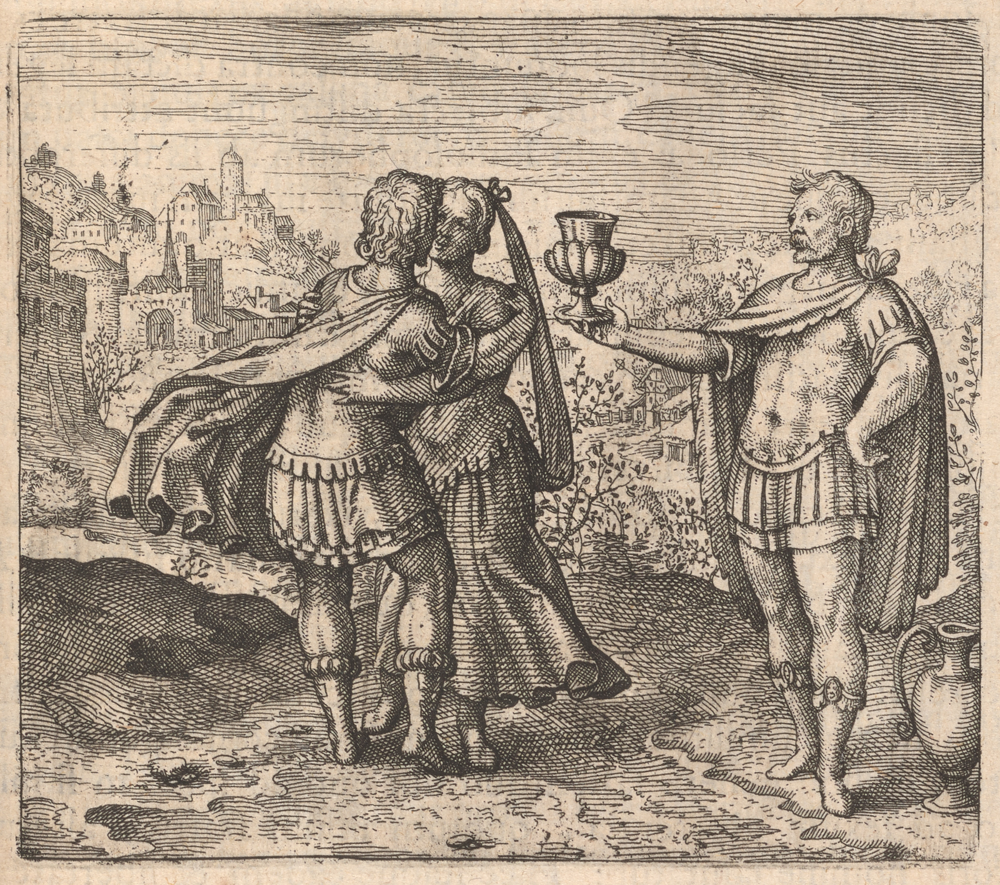

025
Embleme Emblem 4. Of the Secrets of Nature. Joyne Join the Brother with the Sister and give them a cup of love.
EmblemeEmblem 4. Of the Secrets of Nature.
JoyneJoin the Brother with the Sister and give them a cup of love.

Epigramme Epigram 4.
To multiply the world with humane human race,
The brother mustdid his sister close embrace:
Let therefore one the other freindly friendly wed,
That they may act as man and wife in bed:
First to incite, præpare prepare a cup o'th of the best,
And then they both will freely doe do the rest.
Epigramme Epigram 4.
To multiply the world with humane human race,
The brother mustdid his sister close embrace:
Let therefore one the other freindly friendly wed,
That they may act as man and wife in bed:
First to incite, præpare prepare a cup o'th of the best,
And then they both will freely doe do the rest.
026
Discourse 4.
e04-01The divine and politicall political lawes laws doe do both forbid those people to marry, who are by
nature joyned joined in too near a degree of consanguinity, such namely as directly ascend and descend in a genealogicall genealogical line, and that for very good considerations; e04-02but when the
Philosophers speake speak of the mother to be joynd joined with the Sonne Son, or father with the
daughter, or of the brother with the Sister, they neither say or doe do anything contrary
to the sayd said laws: because subjects distinguish attributes and causes effects; e04-03for the
persons of Philosophers are as free from those differences as well as the Sonns Sons and daughters of Adam, who marryed married one with another without the imputation of any
crime: e04-04but the principall principal reason seems to be, that mankind might be more
firmly united and linked in affinity and freindship friendship, and not be divided into
inimicall inimical and hæreditary hereditary factions of familyes families: e04-05the same reason remaining
firme firm and entire in the first Sonns Sons and daughters of Adam, did not as all debarre debar them from the rightsrites of matrimony: e04-06for mankind did then exist in*
*rites
them alone, and noe no others were living besides them, and their parents, and
therefore as ally'd allied in blood, soe so necessarily were they joyned joined in affinity: but
a multitude of men increasing, and being distributed into innumerable familyes families, this was found a true and just cause why brothers Should not marry
Sisters: e04-07The Philosophers have another reason, why Sisters may marry
brothers, namely the similitude of substance, that it may be joyned joined to
the like: e04-08but in this kind there are onely two like one another as to species,
different as to sex, whereof one is saluted by the name of brother, the
other of sister: they therefore may be the same both liberty and condition, yea and inevitable necessity, as the first consanguine men, be lawfully
coḿitted committed to one matrimony: e04-09the brother is hott hot and dry, and therefore very cholericke choleric; the Sister is cold and moist, having much phlegmaticke phlegmatic
matter in her: which natures soe so differing in temper doe do coḿonly commonly best
agree in love and fruitfullnesse fruitfulness, and the propagation of Children: e04-10for as
fire, which may be propagated, is not easily strucke struck out of the most hard
body Steel and Steel, nor out of the brittle flint and flint, but out of hard
and brittle, that is, steel and flint, soe so a lively offspring is not produced from a hott hot man and fiery woman, as neither from both 027cold (for the
coldnesse coldness of the man is barrenesse barrenness) but from him hott hot, her more cold,
e04-11for, in the latitude of humane human temperament, the hottest woman is concluded colder than the coldest man of his sex, if sound, as Lev. Lemnius
in lib. de occ. nat. mirac. proves: the Sister therefore and brother are
rightly joyned joined together by the Philosophers: e04-12If a man defines offspring
from a henne hen, bitch, Shee She goat, Ewe, or other brutes, hee he joynes joins a dogge dog
cocke cock, dogge dog, hee he goat, ramme ram, every animall animal to its Species, to which it is
most like, and soe so is not frustrated of his desire; nor indeed doth does hee he
respect the consanguinity of brutes, but onely only the generosity of every
one, and the congruity of nature: Soe So may it be sayd said of the body of a tree,
and the slippe slip to be therein grafted, e04-13yea of the metallicke
19
nature, which notwithstanding as it hath has of all things the greatest
similitude and homogeneity of substance, doth does soe so require, where it
desires a thing to be joyned joined with it: e04-14But brother and Sister being joynd joined
together, doe do not become fruitfull fruitful, nor persist long in love, except a Philothesium, or cup of loue love be administred administered to them like an amorous potion:
for their minds are hereby soe so quieted and united, that (laying aside modesty) they doe do as it were drunke drunk (like Lot) goe go together, and procreate
an offspring (not spurious but) legitimate: e04-15For who knowes knows not that mankind is very much obliged to medicine, because many thousands of men
are now in the world, which would not have been, if their fathers or forefathers had not by the means and benefit thereof been freed and delivered
from the defect of sterility, or their mothers præserved preserved from abortion, by removing
and taking away the cause, or the nearest, and remote impediment? e04-16This
cup of love is therfore given to this new marryd married couple for the same reasons,
which any man may hereby plainly understand are three, that is to say,
constancy of love, remotion of sterility, and prævention prevention of abortion . .